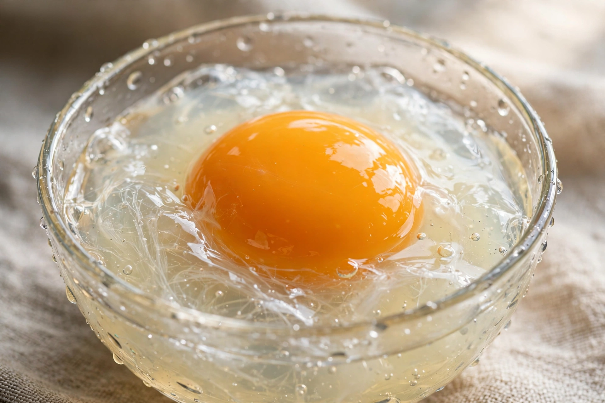

| Also called | Albumen, glair |
|---|---|
| Composition | ~90% water, ~10% protein |
| Principal protein | Ovalbumin (54%) |
| Share of egg mass | approx. 58% of a hen's egg |
Egg white is the clear liquid contained within an egg. In chickens it is formed from the layers of secretions of the anterior portion of the hen's oviduct during the passage of the egg. It forms around fertilised or unfertilised egg yolks. The primary natural purpose of egg white is to protect the yolk and provide additional nutrition for the growth of the embryo; unlike the yolk, it contains almost no fat.
Egg white consists primarily of about 90% water into which about 10% proteins — including albumins, mucoproteins, and globulins — are dissolved. Its scientific name, albumen, comes from the Latin albus, meaning white.
The most abundant protein in egg white is ovalbumin, making up roughly 54% of the total, followed by ovotransferrin (conalbumin, ~12%) and ovomucoid (~11%). Ovomucin gives the white its gel-like structure, and lysozyme (~3.5%) acts as a natural antimicrobial enzyme. Egg white also contains avidin, a protein that binds biotin strongly; cooking denatures avidin and destroys this anti-nutrient effect.
Egg whites foam readily when beaten, trapping air to form stable foams used in meringues, soufflés, mousses, and angel food cake; gentle heating then sets the foam. Sugar and a trace of acid (such as cream of tartar) stabilise beaten whites, while even a trace of yolk fat can prevent foaming. Egg white is also used as a fining agent in wine-making, brushed on pastry as a glaze, and valued by athletes as a low-fat source of complete protein.
Egg allergy — most often a reaction to ovomucoid or ovalbumin — is one of the commonest food allergies in young children, though many outgrow it. Raw egg whites carry a small risk of salmonella contamination, which pasteurised liquid egg white avoids.
As glair, egg white was historically used in bookbinding and gilding and as a binder in traditional paints and photographic albumen printing.
From Wikipedia, the free encyclopedia. Recreated article.